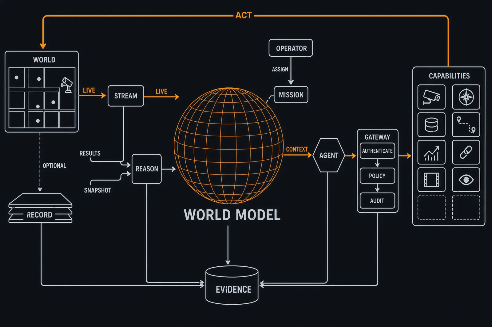
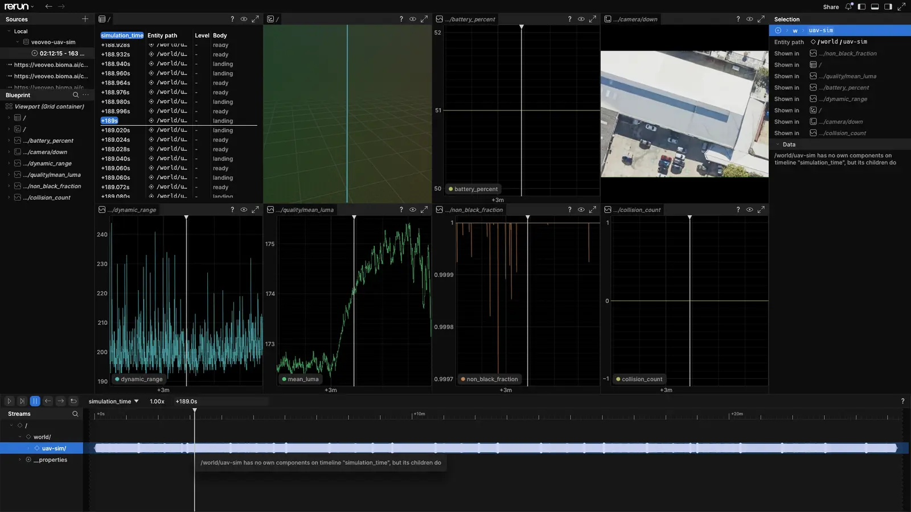
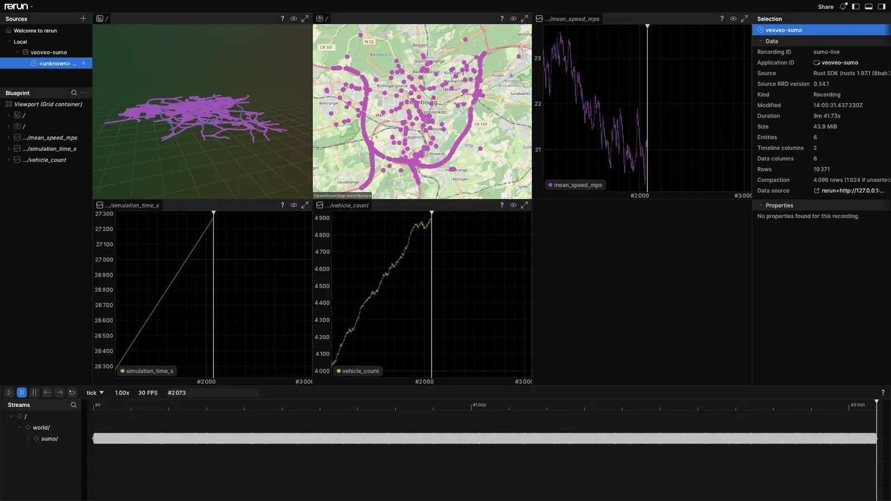
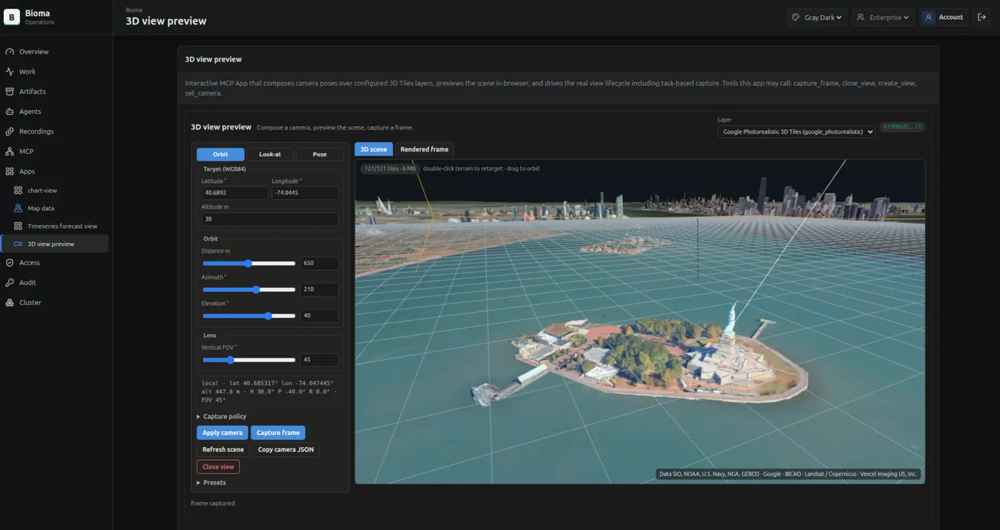
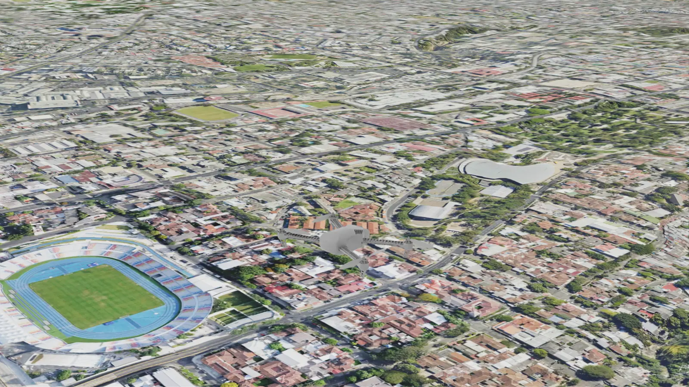

Veoveo
Autonomous operations on infrastructure you own. Veoveo is a self-hosted autonomy harness for physical AI, where humans, robots and agents learn, play and evolve together in simulated and real worlds. Agents rehearse in simulation and command robots in the field through the same controls, and the organization that deploys Veoveo owns and runs every installation, including air-gapped ones.
- Role
- Founder and author
- Language
- Rust
- Runs on
- The owner’s own cluster
- Connects over
- The open MCP standard
What it does
- Always-on agents. They wake when a watched condition changes, act, and pick up long-running tasks again after a restart.
- Robots and simulators on one platform. Agents rehearse in simulation and command robots in the field through the same controls.
- Onboard intelligence. Agents run on the robot itself and keep working when the network drops.
- Multi-modal perception. Agents fuse every sensor stream an operation produces into one model of the world and reason across all of it at once.
- One replayable record. Sensor streams, video, decisions and actions share one timeline that humans and agents replay and query.
- Policy outside the model. Identity, policy and audit checks run outside the AI model on every action.
What teams can build
- Precision agriculture. Field robots and sensors watch every row, and agents dispatch treatment only where a crop needs it.
- Search and rescue. Responders, drones and ground robots share one live map of a disaster site, and agents send the nearest unit to each new signal.
- Perimeter security. Agents watch every sensor around a site and send the nearest ground robot to anything they cannot identify.
- Quality inspection. Cameras and sensors on a production line flag defects as parts pass, and a robot arm pulls each rejected part for a technician to review.
- Infrastructure inspection. A legged robot walks the same route through a substation every night and reports equipment that runs hotter than its baseline.
- Warehouse fulfillment. Mobile robots and pickers share the same aisles, and agents reroute the robots around people and blocked shelves.
Where it’s going
Veoveo builds the builders and the tools they build with. Agents build their own connectors to new sensors, robots and systems, and each mission’s experience improves their skills and trains the next model.
The goal is agents that build an embodied digital twin of the operation they work in, and think in it before they act.
Design
Every request goes through one gateway, whether an operator types it or an agent issues it. The gateway authenticates the caller, checks the policy for that profile, and writes the decision to an audit log. The agent harness holds no credentials, so any MCP host can drive an installation.
Capabilities are MCP servers behind the gateway: maps and routing, UAV simulation, traffic simulation, video detection and tracking, forecasting, optimization and SQL. Long-running work runs as MCP tasks that continue after a client disconnects. Each output is stored as an artifact with an owner, provenance and release state.
A vehicle command requires an exclusive command lease for that vehicle. The current vehicle adapters are simulators: Isaac Sim with PX4 for UAVs and SUMO for road traffic. A real-vehicle adapter would use the same grants and leases.

A mission from one message
An operator typed one message to a pilot agent: fly to Times Square. The message contained no coordinates and gave the agent no new authority.
The agent looked up the destination on the map server, planned the route and flew it in Isaac Sim with PX4 autopilot firmware, using only the vehicle it was allowed to command. It reached every waypoint without a collision across Manhattan, then released the vehicle. The recording hub kept the camera, pose and telemetry for the whole flight, so anyone can replay it.
UAV-E2E-001 acceptance test describes how to repeat the run.
Screens




Stack
- Rust gateway, servers and web clients
- Model Context Protocol: tools, resources, tasks, subscriptions and MCP Apps
- Isaac Sim, PX4 and SUMO for simulated vehicles and traffic
- Rerun for synchronized recordings
- Kubernetes, Helm charts, OCI images and GitOps deployment; OIDC and OAuth sign-in